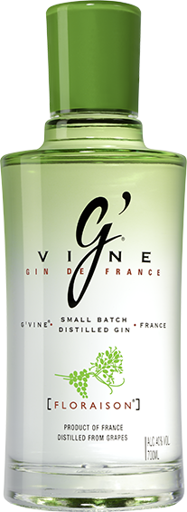
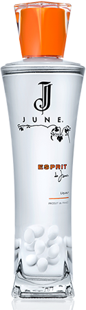
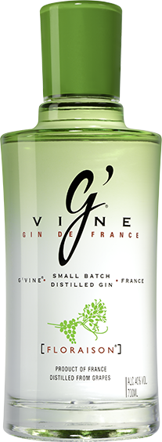
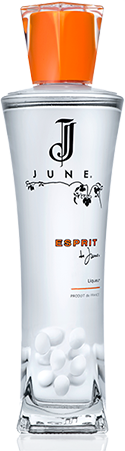

SNEAKERSNSTUFF AU PALAIS VIVIENNE - PARIS
Soirée d’ouverture de la 3ème boutique SneakersNStuff
SNEAKERSNSTUFF AU PALAIS VIVIENNE - PARIS
Après Stockholm puis Londres, c’est à Paris que la nouvelle boutique SneakerNStuff ouvre ses portes et c’est au Palais Vivienne que s'est tenue la soirée d’ouverture.
Un Line up de dj et d’artistes français accompagnés des marques G’Vine, Belaire, Beluga et Tiger pour une ambiance épique dans les anciens appartements majestueux de Napoléon.


 


